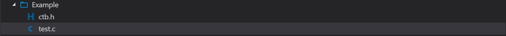

CToolBox: Project Establishment
Introduction
In order to improve programming efficiency, improve code readability, and reduce maintenance difficulty, we have created a C header file project, and now we are glad to introduce you to the 0.0.0.1 version of the project.
Useage
Download the header file (ctb.h), and put the file in the same path as your C project file.

Add the following code to the header of your C project file.
1 |
Instructions
sort_bubble(int array[], int total, int order)
Parameter 1: Input integer array
Parameter 2: Array length
Parameter 3: Arrange order (1: order (small to large) 2: Reverse order (large to small)) Others: Original array output
sort_select(int array[], int total, int order)
Parameter 1: Input integer array
Parameter 2: Array length
Parameter 3: Arrange order (1: order (small to large) 2: Reverse order (large to small)) Others: Original array output
judge_number_perfect(int num)
Input a integer number and judge if it is a perfext number
retrun with value: 1:yes 0:no